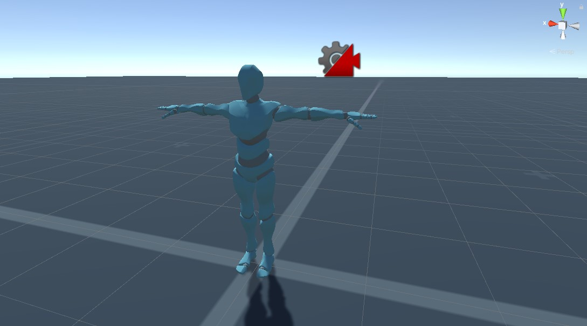

Setting up the player:
Flow is played in a 3D environment from a 3rd person perspective, as such it is important that both the player character is in full view and also as much of the environment as possible.
To begin I imported a mannequin from Mixamo along with some starting animations such as forward jog left/right strafe, and backwards jog.
I set up a PlayerCharacter object, added the mannequin model then created and assigned an animator. Before setting up the animations, I wanted to add basic movement. I created a Script called CharacterMovementController then wrote a simple movement script:
private void Update()
{
float horizontal = Input.GetAxis("Horizontal");
float vertical = Input.GetAxis("Vertical");
Vector3 direction = new Vector3(horizontal, 0, vertical).normalized;
if (direction.magnitude > 0.1f)
{
float targetDirection = cam.eulerAngles.y;
float angle = Mathf.SmoothDampAngle(transform.eulerAngles.y, targetDirection, ref turnSmoothVelocity, turnSmoothTime);
transform.rotation = Quaternion.Euler(0, angle, 0);
direction *= _speed * Time.deltaTime;
transform.Translate(direction);
}
}
With this I could now move my character around the environment. For camera controls I turned to a reliable Unity package called Cinemachine, after importing and configuring a free-look camera, then adjusting my movement code to use the camera’s rotation as the forward direction, my basic character was complete now all that was left was some animations.
Opening the animator I created earlier I added an idle state as the default then branched off to a jog blend tree.
The job blend tree allowed me to make nice smooth directional movements using a limited number of key animations Once the blend tree was complete I went back to my movement script again and linked the animation tree values to the PlayerCharacter velocity.

I had a few more animations downloaded so I added a quick run function and animation tree when the player held shift while moving.

With that the basic player was done and I could now move onto creating the core mechanics of the fighting game.